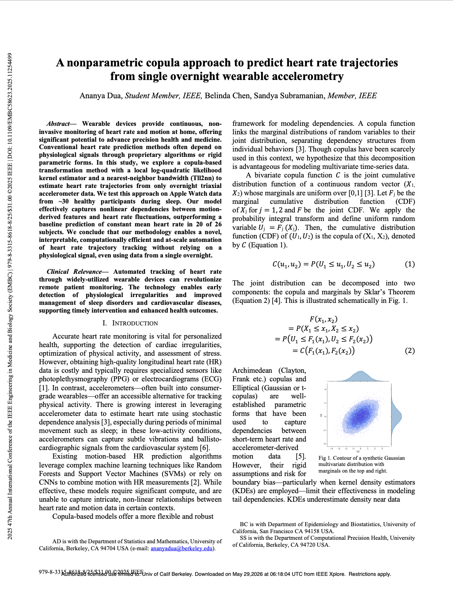
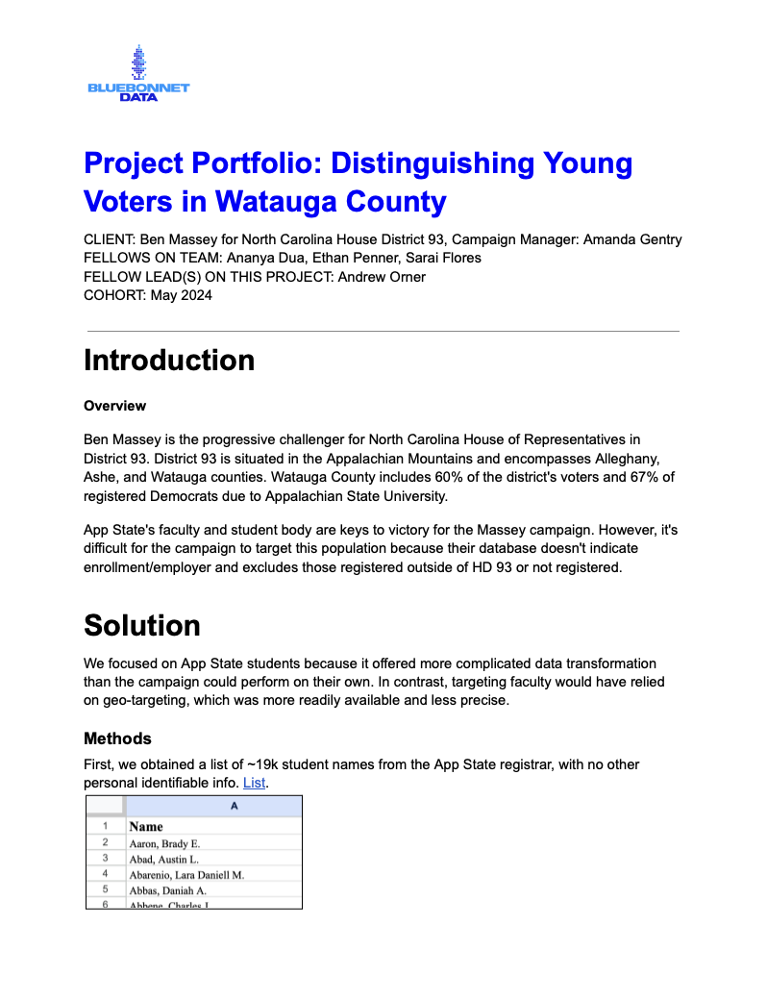
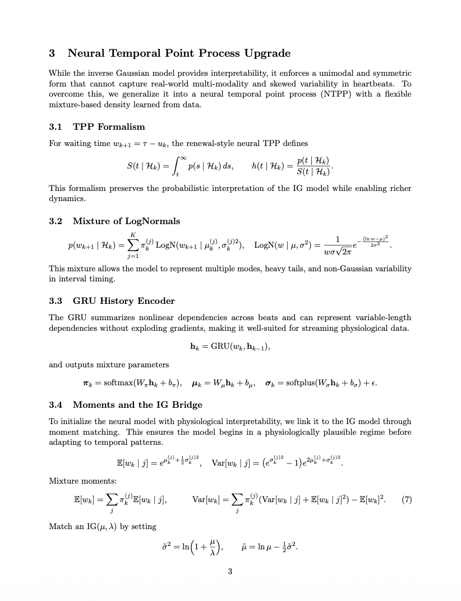

📡 Wireless Congestion Simulation and QoS Analysis
End-to-end WLAN simulation environment in MATLAB + Simulink that models multi-user traffic over IEEE 802.11.
Stress tests access strategies and measures p50 and p95 latency, throughput, packet loss across load regimes.
Proposed CSMA/CA tuning strategies to stabilize QoS under congestion.
- Scenario generator for bursty and periodic traffic profiles
- Reproducible runs with seeded channels and mobility models
- Metrics export to Parquet for downstream analysis

🧠 Contactless HR Prediction with Copula Models
Sleep-phase heart rate prediction from Apple Watch tri-axial accelerometry using a nonparametric copula to capture
motion–HR dependence. Personalized models outperform subject-agnostic baselines in held-out subjects.
Presented at IEEE EMBC and CPH Frontiers.
- Pipeline includes denoising, segmentation, covariate normalization
- Cross-validated hyperparameters, per-subject calibration
- Robustness checks for motion artifacts and missingness

🛰️ AIS Vessel Trajectory Forecasting with NanoGPT
Sequence modeling for maritime AIS using GeoHash tokenization and a compact NanoGPT configuration for constrained hardware.
Custom vocabulary design tackles sparsity and path drift while keeping memory bounded.
- Tokenizer balances spatial resolution and sequence length
- Curriculum schedule reduces early collapse on rare routes
- Offline evaluation on held-out trajectories with realistic gaps

🧭 Student Voter Identification and Outreach Analytics
Integrated registrar records, VAN exports, and public voter files with SQL and fuzzy matching.
Built a Tableau + ArcGIS dashboard for geo-targeted outreach in a college-heavy district.
- Automated PDF to CSV conversion to bypass export quotas
- Deduplication and conflict resolution with deterministic keys
- Segment-level maps for actionable field operations

🌊 Physics-Informed LSTM for Basin Hydrology
Hybrid LSTM ensembles for streamflow and snowmelt on Russian River (Calpella) with physics-informed features
like infiltration, saturation, and ET. Trained on Savio HPC with ipyparallel grid search for NSE optimization.
- Experiment orchestrator with YAML configs and checkpointing
- Early stopping on rolling NSE and out-of-basin validation
- Feature ablations to quantify physical signal contribution

🫀 Neural Temporal Point Process for Ectopy
Extended Barbieri’s inverse Gaussian heartbeat model with a mixture-of-lognormals likelihood and GRU dynamics.
Implemented multi-hypothesis detection for extra, missed, misplaced, and resetting beats with Fenton–Wilkinson calibration.
- Sequence-to-parameters network for conditional inter-beat intervals
- Cross-validated thresholds to control false alarms on noisy segments

🧬 Retinal AMD Detection with Transfer Learning
CNN classifier for age-related macular degeneration using ResNet and EfficientNet backbones.
Preprocessing pipeline includes normalization, artifact cleanup, augmentation, and class-imbalance handling.
- Weighted loss and stratified sampling for minority classes
- Grad-CAM sanity checks for clinical interpretability
- Training reproducibility with fixed seeds and versioned datasets
🌐 Impact Evaluations in Education and Housing
Difference-in-differences for a youth chess intervention in rural Kenya, plus spatially-aware analysis of Brazil’s
Minha Casa, Minha Vida housing program using geolocation boundaries for pre and post comparisons.
- Clean data layers with unit-level fixed effects and clustered SEs
- Event-time plots and placebo tests for robustness
- Reproducible codebook and pipeline for policy partners
📊 California Child Welfare Indicators Project
Research engineering for CDSS with automated ingestion and visualization of county-level child welfare outcomes.
Focus on traceable transformations and consistent metric definitions across time.
- Interactive dashboards for safety, placement, permanency
- Data quality checks with audit logs and assertions